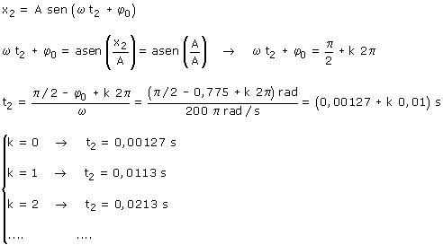
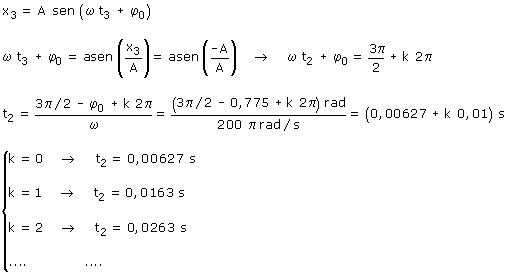

b) Ecuaciones del movimiento
Calculamos cuando está el móvil en cada extremo de la trayectoria. Aplicación (Extremo derecho) Datos: x2 = A, Incógnita t2  Aplicación (Extremo izquierdo) Datos: x2 = -A, Incógnita t2  El primer extremo por el que pasa es el derecho (t = 0.00127
s), después pasa por el izquierdo Δt = 0.00627 s - 0.00127 s = 0.005 s Normal: el tiempo que tarda en ir de un extremo al otro es la mitad del período |